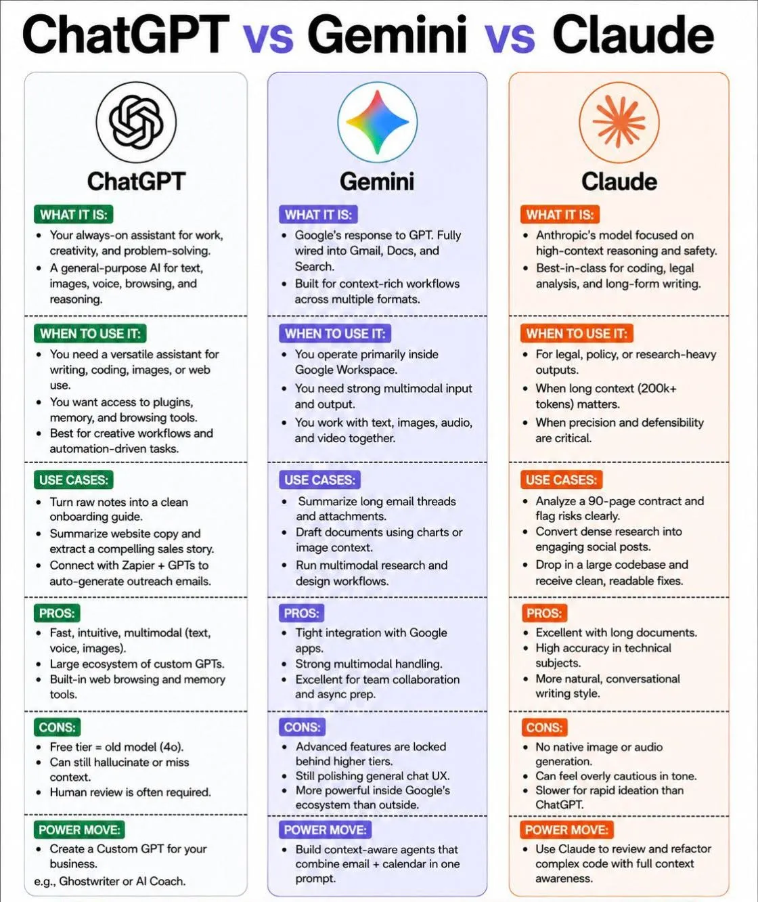

一張圖完整解析｜三大AI助手的「功能、強項、秘技」一次看懂！

以下根據上方圖片內容，將 ChatGPT、Gemini 與 Claude 的「它是什麼、何時用、案例、優點、缺點、獨門絕招」用最簡單的方式完整解釋，讓你秒懂差異！
官方定位： 隨時待命的工作、創意、解難夥伴，支援文字/圖像/語音/瀏覽/推理。
✨ 打造「企業專屬自訂GPT」
例如：AI寫手(Ghostwriter) 或 AI教練，完全客製化工作流程。
官方定位： Google 回應 GPT 的產品，深度綁定 Gmail、文件、搜尋，專為多格式的豐富上下文工作流設計。
⚡ 打造「情境感知智能體」
同一段提示詞中結合「郵件＋日曆＋文件」，自動生成摘要或提案。
官方定位： Anthropic 開發，專注高上下文推理與安全性。程式碼分析、法律文件、長篇寫作最佳首選。
🔍 完整感知程式碼審查＆重構
將整個專案程式碼交給Claude，它會掌握完整上下文，提供高品質修改建議。
| 功能項目 | ChatGPT (簡單說) | Gemini (簡單說) | Claude (簡單說) |
|---|---|---|---|
| 🎯 核心定位 | 全能型助理(寫/程/圖/語音/上網) | Google全家桶AI (Gmail/文件/搜尋) | 長文/法律/程式碼精準專家 |
| 📌 何時用它 | 需要多功能、外掛、自動化、創意工作 | 使用Google生態系、團隊協作、多媒體處理 | 需要超高精確度、處理百頁合約/論文、重構程式 |
| 💼 經典案例 | 筆記→入門手冊、網站文案提煉、Zapier自動發信 | 總結郵件串、圖表起草文件、影音研究工作流 | 90頁合約風險標註、研究轉社群文、大型codebase除錯 |
| ✅ 優點 | 快速直覺、多模態、自訂GPT生態、內建瀏覽記憶 | Google無縫整合、多模態強、協作預備優秀 | 超長上下文200k+token、技術準確、對話自然 |
| ⚠️ 缺點 | 免費版舊模型、可能幻覺、需人工複核 | 高階功能付費、聊天體驗打磨中、生態圈外較弱 | 無圖像/音檔生成、語氣保守、發想速度較慢 |
| 💥 獨門絕招 | 建立企業「自訂GPT」(Ghostwriter/AI教練) | 結合郵件+日曆的情境感知智能體 | 完整感知複雜程式碼重構與全脈絡審查 |
✅ ChatGPT ➜ 追求多功能＋外掛生態＋創意發想，就是它。
✅ Gemini ➜ 工作離不開
Google 信箱、文件、日曆，它會讓你效率暴增。
✅ Claude ➜ 法律合約、長篇技術文件、程式碼安全審查，選它最安心。
{kind=link}